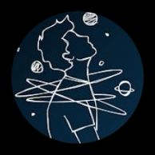
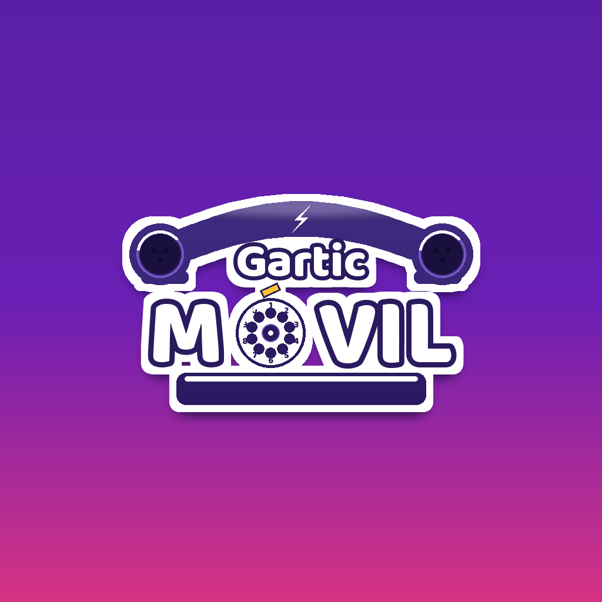

Todos juegan por turnos pasando el mismo teléfono. Entre un jugador y otro aparece una pantalla para que nadie vea lo anterior.
Normal: de 3 a 8 jugadores. Adivina el dibujo: de 2 a 8.
Escribir 45 s, dibujar 60 s, describir 45 s. El anfitrión puede cambiarlos.
Cada ronda, el dibujante elige 1 de 3 palabras secretas. Cada jugador dibuja una vez. Puntos: 10 al primero en acertar, luego 8, 6, 4 y 2; el dibujante gana +5 por cada jugador que acierta.
La partida empieza en unos segundos.
Si acabas de terminar tu turno, tapa la pantalla y pasa el teléfono. La siguiente persona no debe ver lo que hiciste.
Ya enviaste tu turno. Esperamos a que terminen los demás.
En el modo Normal no hay ganador, la gracia es ver cómo se deformó la frase.
Álbum 1 de 4
Puntos por acertar rápido (10, 8, 6, 4, 2) y +5 al dibujante por cada jugador que acierta.
Estos ajustes los aplica el creador de la sala antes de empezar. En Adivina el dibujo, el tiempo por ronda y los temas se eligen en la pantalla de configurar.
Normal — el teléfono roto. Cada frase inicial genera una cadena que pasa por todas las manos en orden aleatorio, y al final se ve cómo se deformó.
1. Frase: «un perro tocando la guitarra en la playa»
2. Dibujo: un perro con una guitarra junto al mar
3. Descripción: «un perro cantando en la playa»
4. Dibujo: un perro con micrófono en la arena
Adivina el dibujo. Por turnos, un jugador dibuja una palabra secreta y los demás la adivinan en el chat mientras se va dibujando. Arriba se ven guiones con la longitud de la palabra y se revela una letra a los 20 s y otra a los 40 s (en rondas de 60 s). El primero en acertar gana 10 puntos, luego 8, 6, 4 y 2; el dibujante gana +5 por cada jugador que acierta. Al final, podio con los 3 primeros.
Para jugar por wifi: el anfitrión crea la sala (CREAR SALA) y los demás se unen con su IP y el código de 4 letras (UNIRSE), todos en la misma wifi o en el punto de acceso del anfitrión. Solo el anfitrión cambia los ajustes y pulsa EMPEZAR. No hace falta internet, solo la red local. No hay salas públicas. Consejo del original: si no están en la misma habitación, jueguen en llamada de voz (Discord, Zoom) para reírse juntos.
En un solo teléfono: juegan por turnos y entre uno y otro aparece la pantalla «Pásale el teléfono a…» para que nadie vea lo anterior.
Sonido y vibración se guardan en este teléfono.
Cuenta atrás, aviso de los últimos 10 segundos, cambio de ronda y aciertos en Adivina.
El teléfono vibra en los mismos momentos que los sonidos.
Tu teléfono hace de anfitrión 👑. Los demás se unen con tu IP y el código de sala, desde la misma wifi o tu punto de acceso.
Dirección de la sala: —
Generando la sala…
Pide al anfitrión su IP y el código de sala. Tienen que estar en la misma wifi o en el punto de acceso del anfitrión. Solo el anfitrión cambia los ajustes: tú solo los ves.
También puedes escribir el puerto, por ejemplo 192.168.43.1:7778. Sin puerto, se usa el 7777.
Solo salas wifi cercanas, sin salas públicas. Crea una sala local o únete con la IP del anfitrión.